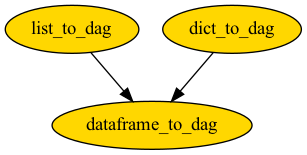

✨ Construct¶
Construct Directed Acyclic Graph (DAG) from list, dictionary, and pandas DataFrame.
Construct DAG from |
Using parent-child relation |
Add node attributes |
|---|---|---|
List |
list_to_dag |
No |
Dictionary |
dict_to_dag |
Yes |
DataFrame |
dataframe_to_dag |
Yes |
These functions are not standalone functions. Under the hood, they have the following dependency,
Functions:
|
Construct DAG from pandas DataFrame. |
|
Construct DAG from nested dictionary, |
|
Construct DAG from list of tuple containing parent-child names. |
- bigtree.dag.construct.dataframe_to_dag(data: ~pandas.core.frame.DataFrame, child_col: str = None, parent_col: str = None, attribute_cols: list = [], node_type: ~typing.Type[~bigtree.node.dagnode.DAGNode] = <class 'bigtree.node.dagnode.DAGNode'>) DAGNode¶
Construct DAG from pandas DataFrame. Note that node names must be unique.
child_col and parent_col specify columns for child name and parent name to construct DAG. attribute_cols specify columns for node attribute for child name If columns are not specified, child_col takes first column, parent_col takes second column, and all other columns are attribute_cols.
>>> import pandas as pd >>> from bigtree import dataframe_to_dag, dag_iterator >>> relation_data = pd.DataFrame([ ... ["a", None, 1], ... ["b", None, 1], ... ["c", "a", 2], ... ["c", "b", 2], ... ["d", "a", 2], ... ["d", "c", 2], ... ["e", "d", 3], ... ], ... columns=["child", "parent", "step"] ... ) >>> dag = dataframe_to_dag(relation_data) >>> [(parent.node_name, child.node_name) for parent, child in dag_iterator(dag)] [('a', 'd'), ('c', 'd'), ('d', 'e'), ('a', 'c'), ('b', 'c')]
- Parameters:
data (pandas.DataFrame) -- data containing path and node attribute information
child_col (str) -- column of data containing child name information, defaults to None if not set, it will take the first column of data
parent_col (str) -- column of data containing parent name information, defaults to None if not set, it will take the second column of data
attribute_cols (list) -- columns of data containing child node attribute information, if not set, it will take all columns of data except child_col and parent_col
node_type (Type[DAGNode]) -- node type of DAG to be created, defaults to DAGNode
- Returns:
(DAGNode)
- bigtree.dag.construct.dict_to_dag(relation_attrs: dict, parent_key: str = 'parents', node_type: ~typing.Type[~bigtree.node.dagnode.DAGNode] = <class 'bigtree.node.dagnode.DAGNode'>) DAGNode¶
Construct DAG from nested dictionary,
key: child name,value: dict of parent names, attribute name and attribute value. Note that node names must be unique.>>> from bigtree import dict_to_dag, dag_iterator >>> relation_dict = { ... "a": {"step": 1}, ... "b": {"step": 1}, ... "c": {"parents": ["a", "b"], "step": 2}, ... "d": {"parents": ["a", "c"], "step": 2}, ... "e": {"parents": ["d"], "step": 3}, ... } >>> dag = dict_to_dag(relation_dict, parent_key="parents") >>> [(parent.node_name, child.node_name) for parent, child in dag_iterator(dag)] [('a', 'd'), ('c', 'd'), ('d', 'e'), ('a', 'c'), ('b', 'c')]
- Parameters:
relation_attrs (dict) -- dictioning containing node, node parents, and node attribute information, key: child name, value: dict of parent names, node attribute and attribute value
parent_key (str) -- key of dictionary to retrieve list of parents name, defaults to "parent"
node_type (Type[DAGNode]) -- node type of DAG to be created, defaults to DAGNode
- Returns:
(DAGNode)
- bigtree.dag.construct.list_to_dag(relations: ~typing.List[~typing.Tuple[str, str]], node_type: ~typing.Type[~bigtree.node.dagnode.DAGNode] = <class 'bigtree.node.dagnode.DAGNode'>) DAGNode¶
Construct DAG from list of tuple containing parent-child names. Note that node names must be unique.
>>> from bigtree import list_to_dag, dag_iterator >>> relations_list = [("a", "c"), ("a", "d"), ("b", "c"), ("c", "d"), ("d", "e")] >>> dag = list_to_dag(relations_list) >>> [(parent.node_name, child.node_name) for parent, child in dag_iterator(dag)] [('a', 'd'), ('c', 'd'), ('d', 'e'), ('a', 'c'), ('b', 'c')]
- Parameters:
relations (list) -- list containing tuple of parent-child names
node_type (Type[DAGNode]) -- node type of DAG to be created, defaults to DAGNode
- Returns:
(DAGNode)